在本届奥运会开始之前，伦敦议会广场之上竖起了一座纪念碑。这座纪念碑是为了纪念在俄乌战争中失去生命的487名乌克兰运动员和教练而建的👇
（复习贴：487位运动员死于战火，乌克兰向巴黎派出史上“最小国家队”！泽连斯基：这就是胜利）
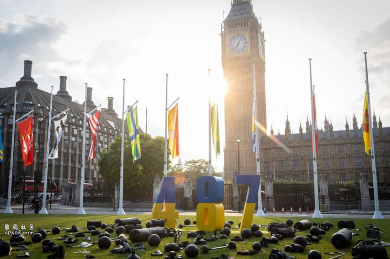
不过，尽管战争残酷，但乌克兰仍然派出了143人前往巴黎参赛。而这两天，他们终于迎来了期待已久的夺金时刻。
巴黎时间8月3日晚上8点，乌克兰队在巴黎大皇宫中举行的女子团体佩剑决赛中以45比42的比分击败了韩国队，拿下了乌克兰在本届奥运会中的首金。
而这也是乌克兰在继2008年北京奥运会之后，在该项目上获得的第2枚金牌。
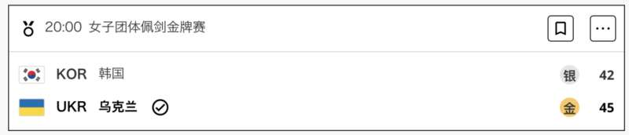
虽然比赛的整个过程中，观众都无法看清参赛选手们的脸👇
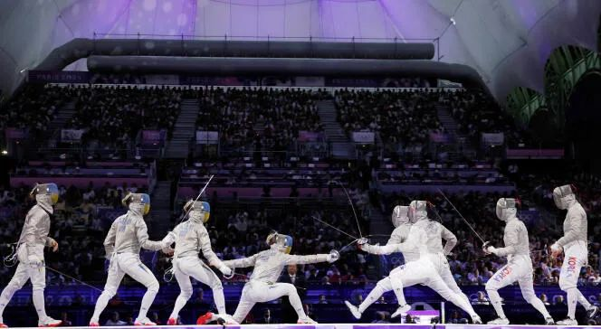
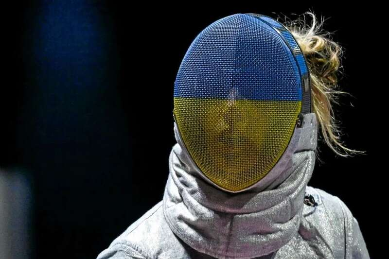
但在比赛结束，胜负已分的那一刻，无数人都为这样的一幕所动容👇
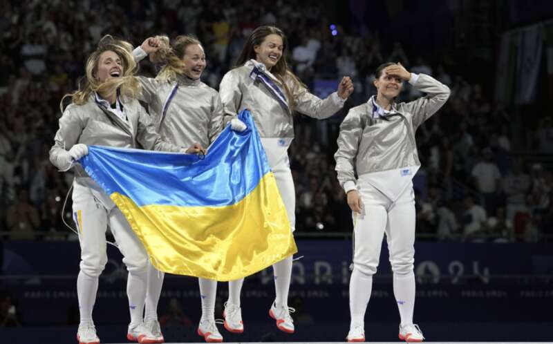
压抑许久的呐喊，夺眶而出的眼泪，剧烈跳动的心脏，都是曾经挣扎过且拼搏过的证明。
奥运冠军本就难得，更何况这一枚金牌的到来于乌克兰来说，弥足珍贵。
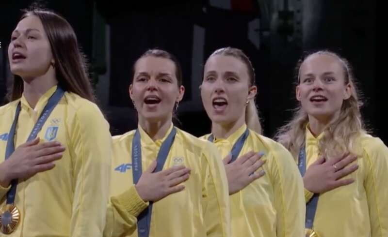
这个团队之中的灵魂人物是乌克兰剑后Olga Kharlan，她7月29日才刚刚在女子单人佩剑比赛中拿到了铜牌，这也是乌克兰在本届奥运会上的第一枚奖牌。
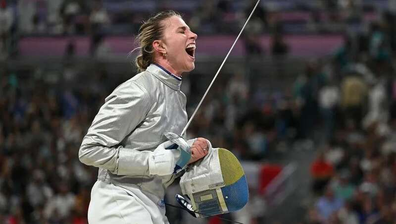
Kharlan今年已经33岁了，这个年纪的她拿过的奖牌不计其数。她曾拿过四次世锦赛的冠军，六次欧锦赛的冠军，也曾在奥运的赛场上赢过一金一银三铜，是乌克兰历史上在奥运会获奖最多的运动员，可以这么说，她是老将，也是名将。
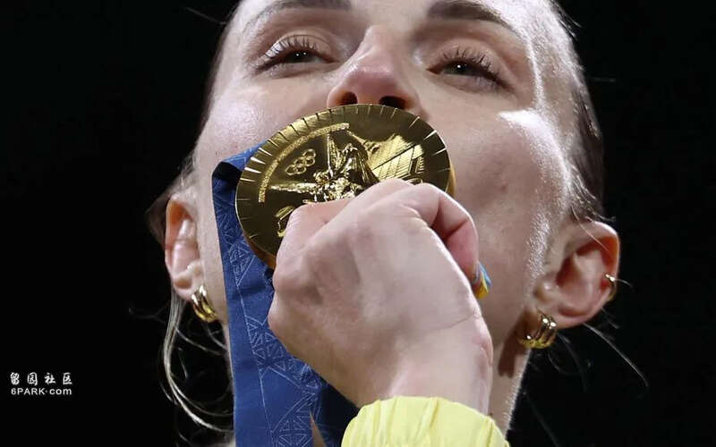
与此同时，她大概也是乌克兰体坛最刚的运动员之一。
去年的世锦赛上，Kharlan本以大比分（15-7）击败了俄罗斯选手Anna Smirnova，但却因为在赛后拒绝与对方握手而被取消了资格，甚至一度被禁赛。
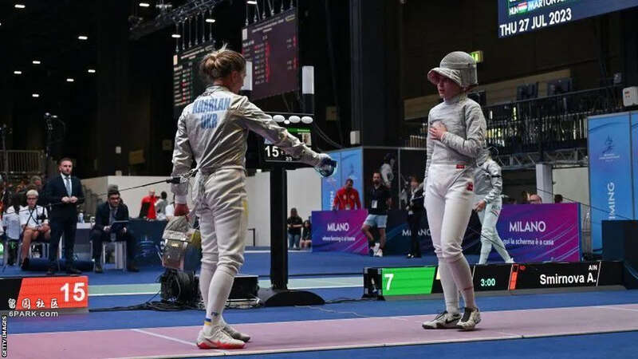
即便最终她还是拿到了奥运会的资格，但在获得铜牌之后的采访上她依然坚定表示：
我会将这枚奖牌献给乌克兰，献给守卫国土的战士，献给失去生命，无法来到奥运赛场的运动员们。
话语虽短，但足以窥见她心中的波澜与不甘，同时也给了其他乌克兰运动员动力与希望。
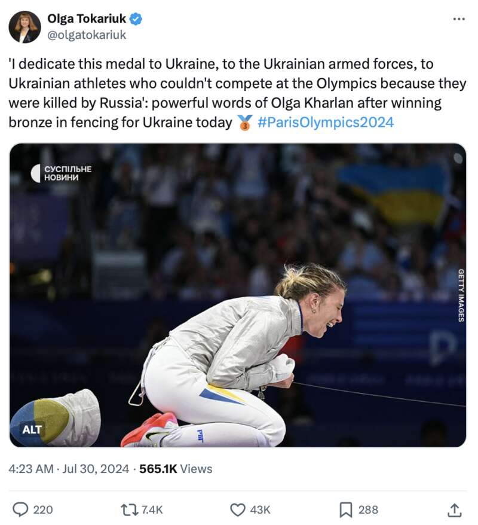
于是，一天之后，上周日在法兰西体育场上举行的女子跳高比赛中，乌克兰跳高女神Yaroslava Mahuchikh以2米的成绩顺利摘金。
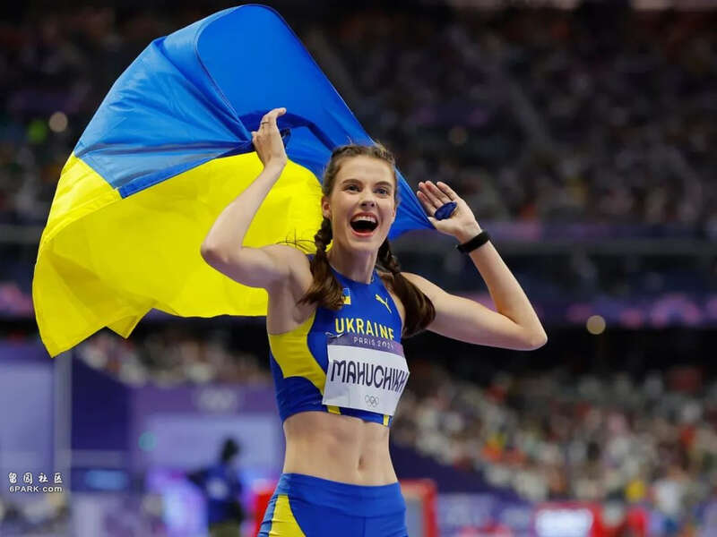
Mahuchikh今年22岁，虽然年轻，但她一直都是该项目的夺金热门人选。没办法，谁让年纪轻轻的她就已经是世界纪录的保持者了呢。
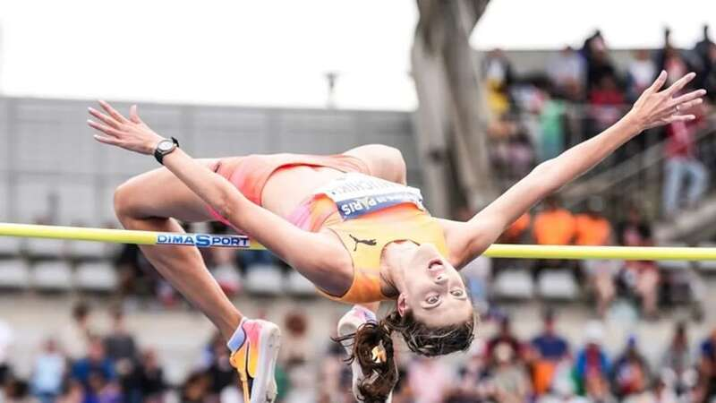
上个月，Mahuchikh刚刚在世界田联钻石联赛巴黎站上成功将女子跳高的世界纪录提高到了2.1米，打破了已经保持了37年的世界纪录👇
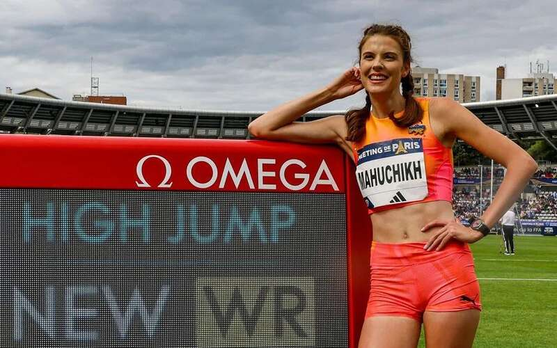
少女纵身一跃，便将世界翻了个个。而这个突破，几乎已经帮她锁定了今年奥运会女子跳高的金牌。
即便在奥运的赛场上，她的最终成绩为2米，但足够让她笑到最后了。
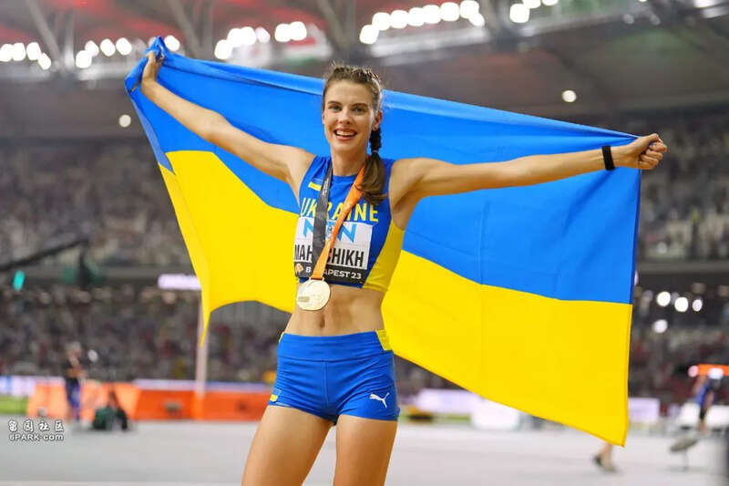
只不过，连Mahuchikh自己也没想到的是，她一夜之间红遍全网的原因，不是因为夺冠，而是因为在奥运赛场上睡觉！
这事听起来有点离谱，但却是真的。
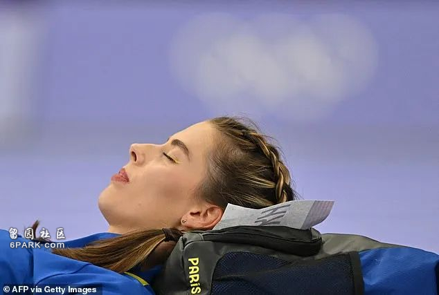
大家都造，在跳高比赛之前，都会给各位选手一些赛前准备的时间。可Mahuchikh偏偏不喜欢这个环节，她觉得如果坐在赛场边，会让血液都聚集在脚上，这样会影响接下来跳跃的感觉，一旦试跳不好，那么正式比赛的心态就会受到影响。
于是，在参加了很多次大赛之后，Mahuchikh就总结出了自己的准备方式——躺着。
她会自己准备好睡袋，躺在赛场边闭上眼睛小睡，睡不着也没关系，躺着闭目养神也可以。回想一下比赛姿势，沉淀一下比赛心情，以静制动。
就酱，在法兰西体育场的紫色跑道上，Mahuchikh淡定的套上了绿色的睡袋👇
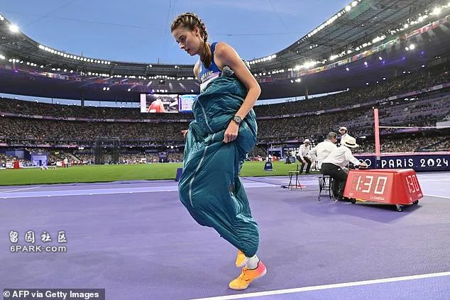
缓缓地坐下来👇
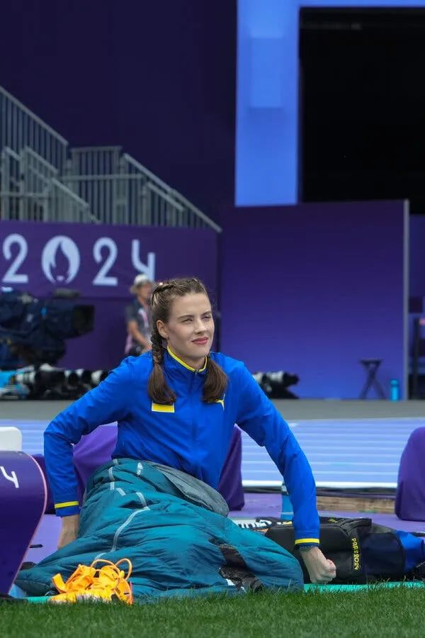
再安静的闭上了眼睛👇
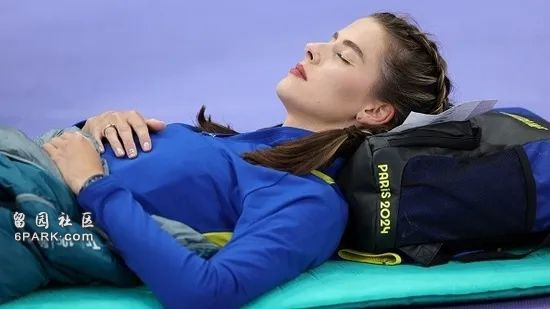
有时候，她也会更进一步，将头靠在背包上，闭上眼，伸出双手，像这样👇
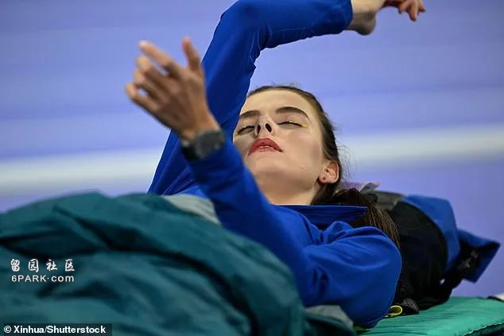
如果你仔细观察就能发现，她特意化上了蓝色和黄色的眼影，而这正是乌克兰国旗的颜色。
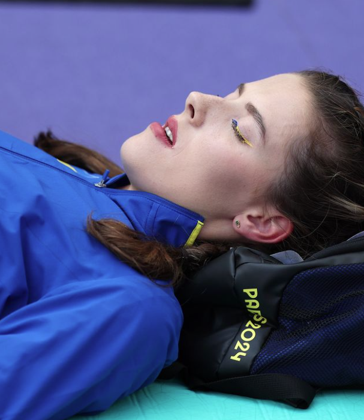
这一幕恰好被摄影师抓拍了下来，Mahuchikh的睡脸也为她赢得了田径场上睡美人的称号。
与此同时，诸如#巴黎奥运会上最松弛的一幕这样的话题也迅速登上了热搜榜。
然后，这看似松弛的背后，跳高少女Mahuchikh也有着坎坷的夺金之路。
Mahuchikh在跳高上是很有天赋的，13岁才正式进入跳高界，短短几年的时间里就一再自我突破，成为了冉冉升起的新星。
可是当俄乌战争发动之后，Mahuchik的家园也遭遇了战火，她曾逃回老家和家人一起在地下室里躲避了整整三周，直到外面的轰鸣声变小，才敢重新走上地面。
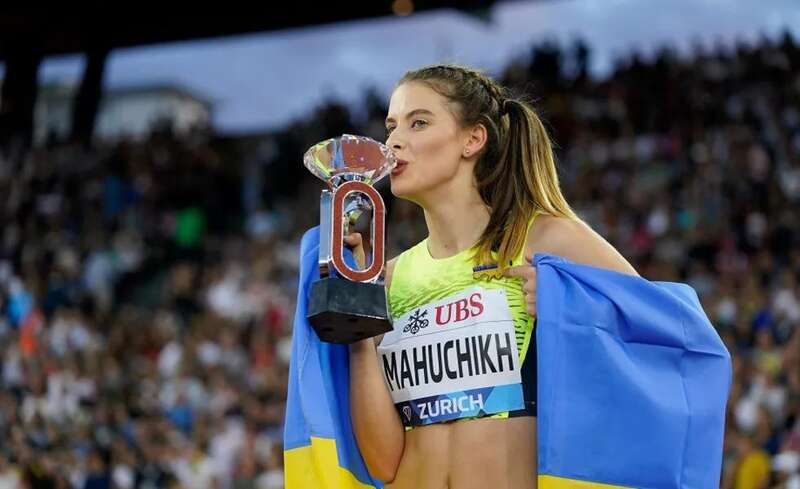
在那之后，Mahuchik不眠不休坐了三天的车，前往塞尔维亚的首都贝尔格勒继续训练。
在过去的两年里，她一直都漂泊在欧洲各地训练，回不去的家乡，也成为了她心里的痛。
所幸的是，Mahuchik不负众望，终于拿下了冠军，圆了自己，也圆了乌克兰的梦。
值得一提的是，这场比赛上一共有两枚铜牌。
当时，澳大利亚选手Eleanor Patterson和乌克兰选手Iryna Gerachtchenko都是一样的成绩，按照惯例来说，需要加赛一轮来决定胜负，但这两位小姐姐放弃了加赛，决定共享铜牌。
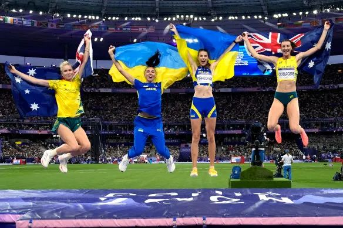
或许，在浪漫的薰衣草跑道上，这样柔软又强大的故事总会发生。就像今天这个睡美人的故事，也会上热搜一样吧。